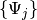
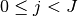

LinearCombinationOfWPs¶
About the LinearCombinationOfWPs class¶
The WaveBlocks Project
@author: R. Bourquin @copyright: Copyright (C) 2010, 2011, 2012, 2013, 2014, 2015, 2016 R. Bourquin @license: Modified BSD License
Inheritance diagram¶

Class documentation¶
-
class
WaveBlocksND.LinearCombinationOfWPs(dimension, number_components, number_packets=0)[source]¶ This class represents linear combinations of general but compatible wavepackets of any kind.
-
__init__(dimension, number_components, number_packets=0)[source]¶ Initialize a new linear combination of general wavepackets. This object represents
 .
All
.
All  wavepackets
wavepackets  have the same number
have the same number  components and are defined in the
components and are defined in the  dimensional space.
dimensional space.Parameters: - dimension – The space dimension the packets have.
- ncomponents – The number of components the packets have.
Returns: An instance of
LinearCombinationOfWPs.- dimension – The space dimension
-
add_wavepacket(packet, coefficient=1.0)[source]¶ Add a new wavepacket to the linear combination.
Parameters: - packet (A
Wavepacketsubclass instance.) – The new wavepacket to add. - coefficient – The corresponding coefficient
 , default is 1.0.
, default is 1.0.
- packet (A
-
add_wavepackets(packetlist, coefficients=None)[source]¶ Add a list of new wavepackets to the linear combination.
Parameters: - packetlist (A list of
Wavepacketsubclass instances.) – A list of new wavepackets . - coefficients – The corresponding coefficient vector
 , default
is a vector of all 1.0.
, default
is a vector of all 1.0.
- packetlist (A list of
-
evaluate_at(grid, component=None)[source]¶ Evaluate the linear combination of wavepackets
 at
the given nodes
at
the given nodes  .
.Parameters: - grid (A class having a
get_nodesmethod.) – The grid containing the nodes .
containing the nodes . - component – The index
 of a single component to evaluate.
(Defaults to
of a single component to evaluate.
(Defaults to Nonefor evaluating all components.)
Returns: A list of arrays or a single array containing the values of the
 at the nodes .
at the nodes .- grid (A class having a
-
get_coefficient(index)[source]¶ Get the coefficient
of the wavepacket .Parameters: index – The index  of the coefficient to retrieve. Returns: The coefficient .
-
get_coefficients()[source]¶ Get the vector with all coefficients
of all wavepackets .Returns: The vector of all coefficients . The vector is of
shape  .
.Type: An ndarray
-
get_description()[source]¶ Return a description of this linear combination object. A description is a
dictcontaining all key-value pairs necessary to reconstruct the current instance. A description never contains any data.
-
get_dimension()¶ Returns: The space dimension of all the wavepackets .
-
get_number_components()¶ Returns: The number of components all the wavepackets have.
-
get_number_packets()¶ Returns: The number of wavepackets in the linear combination .
-
get_wavepacket(index)[source]¶ Get the wavepacket
from the linear combination.Parameters: index – The index of the packet to retrieve. Returns: The wavepacket .Type: A Wavepacketsubclass instance.
-
get_wavepackets()[source]¶ Get a list of all wavepackets
in the linear combination.Returns: A list of all wavepackets .Type: A list of Wavepacketsubclass instances.
-
remove_wavepacket(index)[source]¶ Remove a wavepacket
from the linear combination.Parameters: index – The index of the packet to remove.
-
set_coefficient(index, coefficient)[source]¶ Set the coefficient
of the wavepacket .Parameters: - index – The index of the coefficient to retrieve.
- coefficient – The coefficient .
-
set_coefficients(coefficients)[source]¶ Update all the coefficients
of .Parameters: coefficients (An ndarray) – The vector.
-
set_wavepackets(packetlist)[source]¶ Set the list
 of new wavepackets.
of new wavepackets.Parameters: packetlist (A list of Wavepacketsubclass instances.) – A list of new wavepackets.
-